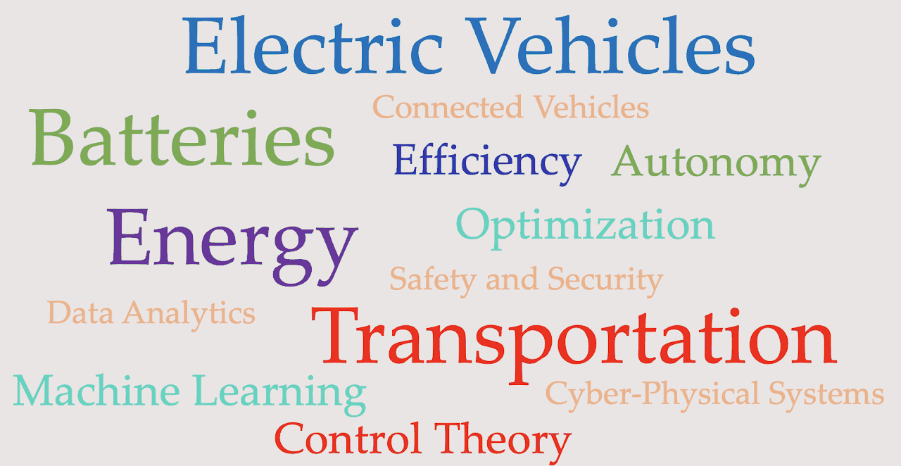
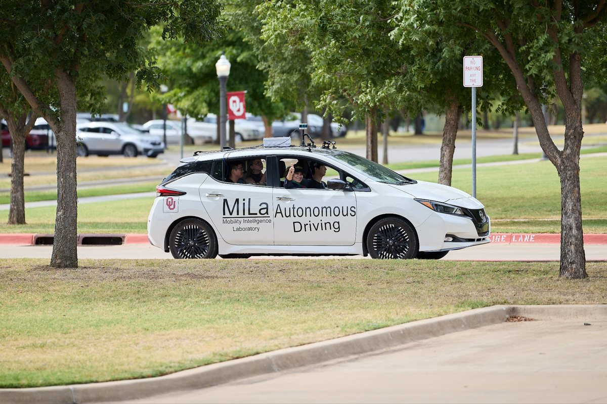
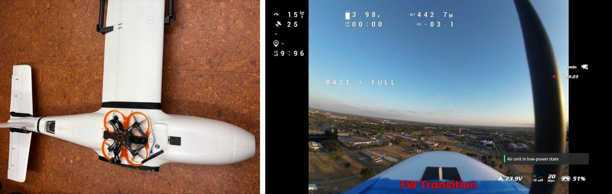

Research
Interests
Batteries now sit at the center of renewable integration, electric and autonomous vehicles, and a resilient grid. Our lab improves the efficiency, safety, and sustainability of energy storage and mobility systems through physics-based and data-driven modeling coupled with intelligent control. Our work spans multiple time and length scales: battery modeling at the materials and cell level, energy management at the device and pack level, and system-wide integration of electric and autonomous vehicles into transportation and energy networks.

Advanced BMS Estimation and Control
Energy and transportation networks are pushing batteries to deliver high energy, high power, and safe operation at once. A battery management system has to achieve this even though batteries are undermeasured, underactuated, mathematically complex, and heterogeneous. Our lab builds estimation and control directly on first-principle electrochemical, thermal, and mechanical models. By estimating how internal states evolve in space and time, a battery can be operated at its true physical limits: the controller constrains internal states instead of terminal voltage and current, which yields more usable energy and power and a longer life.
We designed real-time state-of-charge and state-of-health estimators for packs of thousands of heterogeneous cells, with proven convergence, that recover cell-level information from pack-level sensing alone. We also developed a provably convergent estimator of the internal temperature field in large-format cells, and a model predictive fast charger that maximizes parameter identifiability under electrochemical safety constraints.
Where first-principle models fall short or run too slowly, we bring in physics-informed machine learning: neural networks that estimate states and parameters together from limited data, imitation-learning controllers that reproduce an expert predictive controller in real time, and a physics-enhanced Gaussian process that serves as a real-time lithium-plating safety constraint during fast charging. A hardware-in-the-loop battery prototyping platform at OU supports identification and validation. This work has earned an ASME Energy Systems Best Paper award and three best-paper finalist selections.
Modeling and Control for Next-Generation Battery Systems
Silicon can store nearly ten times more lithium than the graphite used in today's anodes, but it swells substantially during charging, and the resulting stress drives rapid capacity fade. Under an NSF CAREER award, our lab is establishing estimation and control theory for the coupled chemical, thermal, and mechanical interplay in silicon/graphite electrodes, so that expansion-driven degradation can be managed directly. We have developed a stress-based degradation model for silicon/graphite electrodes, and we are working to learn the physics that no closed-form model captures as neural components embedded in the electrochemical model, trained on cycling, expansion, and impedance data from our laboratory.
All-solid-state batteries promise large gains in energy density and charging speed, yet rapid degradation of lithium metal hinders commercialization. With new NSF support, we fuse multiphysics modeling of solid interfacial dynamics, mechanics, heat, and degradation with control-theoretic frameworks that constrain the feasible operating region. This builds on our observers for solid-state cells, whose convergence is proved without model reduction.
Estimators and controllers are only as good as the physics they encode, and the parameters that govern degradation originate at the material level. We are pairing system-level modeling and control with material-level characterization of electrodes and electrolytes, so that measured material properties, rather than fitted proxies, guide the design of estimators and operating constraints.
Supported by an NSF CAREER award (2025 to 2030)
Autonomous Mobility for Rural and Tribal Communities

Rural communities in the U.S. face sparse infrastructure and infrequent transit that restrict access and raise crash risk. Our lab leads ACCEL-RT, a $10 million U.S. Department of Transportation center (2026 to 2032) with UC Berkeley and the University of New Mexico on automation-enabled logistics for rural and tribal communities along the I-40 corridor. It is a real-world deployment program, not just a simulation study: its projects put hardware on real roads.
Rural automated driving fails where urban systems succeed, on unpaved, unmarked roads without reliable GPS or cellular coverage. The center's rural autonomous vehicle, built on an in-house drive-by-wire kit with satellite backup connectivity, has completed autonomous package delivery and remote-assist driving, and has demonstrated navigation without GPS or lidar by fusing vision with vehicle odometry.

Rural crash victims wait 22 minutes on average for emergency medical services, nearly twice the urban time, often with no bystander to call. A long-range VTOL drone carries an inspection quadcopter to the crash and streams scene video to the emergency room before ground responders arrive. Automated trucks see only as far as their own sensors, so a Roadway Intelligence Service fuses live state and weather feeds across four states into one trusted map of the corridor ahead.
With $3.1 million from the U.S. Department of Energy, our lab also leads a consortium deploying shared autonomous electric vehicles as first- and last-mile transit in tribal communities in Oklahoma, beginning with a 2.5-mile, seven-stop route in Atoka in the Choctaw Nation. Our aim across these deployments is battery- and energy-aware operation, in which estimators and controllers inform dispatch, charging, and routing, and field data flow back to sharpen the models.
Supported by the U.S. Department of Transportation and the U.S. Department of Energy
Second-Life Batteries and the Repurposing Pipeline
- Retired EV packArrives with an unknown history
- DisassemblyThe pack is broken down into modules
- Rapid diagnosisMechanical and electrochemical tests grade each module's health
- Digital twinA physics-based model is identified from limited test data
- Mixed-health packModule-level control shares the load according to condition
- Second lifeForklifts and other industrial vehicles
Retired electric-vehicle batteries still hold much of their original capacity, but each one has aged differently and arrives with little or no history. Our lab is building a complete repurposing pipeline: disassembly, diagnosis, modeling, and control. Our rapid diagnosis method combines mechanical and electrochemical measurements to grade the health of a used battery, and a physics-informed learning approach builds a digital twin of each battery from limited test data.
Conversations with industry pointed to the real bottleneck: combining batteries in different states of health into one reliable system. Our diagnostics for used cells therefore feed directly into second-life control. We are developing module-level control that lets stronger and weaker modules share the load according to their condition, and we are validating it on a prototype pack aimed at forklifts and other industrial vehicles, the most promising near-term market.
Supported by NSF translational research funding and the OU Growth Fund
Nonlinear Control and Estimation Theory
Our applications rest on theory that stands on its own. For descriptor (differential-algebraic) systems, which arise whenever dynamic subsystems are coupled by algebraic constraints, our lab established adaptive observers that estimate states and unknown parameters simultaneously with proven asymptotic convergence, and interval observers that return guaranteed bounds under bounded uncertainty.
For distributed-parameter systems, modeled by partial differential equations, we developed backstepping state and disturbance estimators for unstable reaction-advection-diffusion PDEs, boundary observers for coupled hyperbolic and parabolic PDEs, and PDE observers with convergence proved without model reduction.
For nonlinear estimation and identification, we introduced observers for systems with state-dependent parameters, estimation of weakly observable states, identifiability analysis of coupled transport dynamics, Fisher-information-guided experiment design inside predictive control, optimal sensor placement in PDE models, and fault-tolerant estimation under sensor failure. These results apply broadly to constrained, distributed, and undersensed systems.